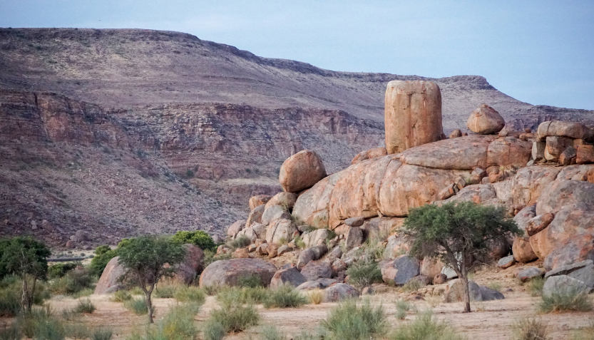
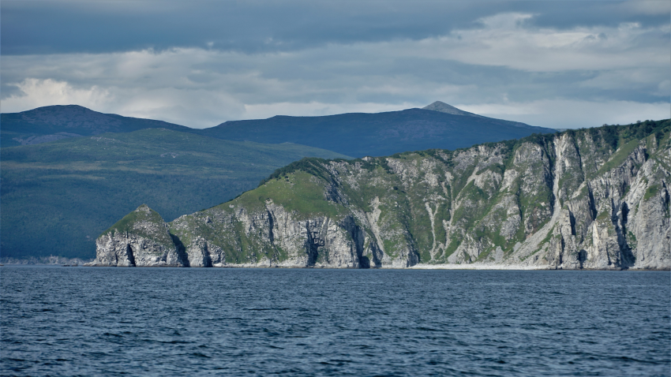

Кто придумал этот дурацкий Мурма́нск?! Город был и есть Му́рманск.
Пандемия заставила искать новые направления внутри России. Визитной карточкой Мурманска стало Северное Сияние — Aurora Bolearis. Чтобы его увидеть народ и рванул в город, ну или мне так показалось.
На подлёте под крылом самолёта в ярких лучах полуденного полярного солнца искрятся белоснежные острова в Белом море, на берегу небольшие сопки, покрытые редкой невысокой елью, похожи на голову мужчины, который решил сбрить волосы, а они уже немного отрасли.
Яндекс Такси работает, а вот Gett — нет. От аэропорта до города можно доехать за полчаса. Переезжаем реку Кола. В голову залетела мысль: а если местные жители по соглашению с мировым производителем переименуют реку в Кока-Кола или Пепси-Кола, хорошие деньги заплатят? А если в масштабах всего Кольского полуострова, сделав его Кока-Кольским полуостровом?
В Мурманске три большие гостиницы: Азимут, Меридиан, Парк Инн Полярные Зори. По первым двум могу ответственно сказать — вполне прилично! Стоят друг напротив друга на главной площади «Пять Углов» (Питер! Привет!). Азимут выше, 17 этажей и вообще претендует на звание символа города. Хороший номер высокой категорий стоит 5 – 7000 рублей, в Меридиане номера размером больше, да ещё жить придётся с двумя лайками (не в смысле «лайками», а лайками, красивыми собаками), которые смотрят на меня со стены. Оба отеля можно рассматривать как подходящее место размещения. Забронировать номер было сложно, в свой первый визит я не смог найти ни одного свободного номера в «Азимуте», это при том, что гостиница просто огромная. В «Меридиане» тоже не было свободных номеров, поставили на лист ожидания, только так смог найти свободный номер.
Что делать в Мурманске? Поясню — я в командировке, поэтому за полноту информации не отвечаю. Мурманск скорее стартовая площадка для поездок в область. Первое и главное — посмотреть Северное Сияние, где-нибудь в районе Териберки, например. Своей популярностью Териберка обязана фильму «Левиафан», снятому здесь, и китайским туристам. До пандемии сюда попёрли китайцы, прошёл слух, что зачатие во время просмотра северного сияния решает проблему бесплодия. Точность такого определения сомнительна, но народ повалил, в первую очередь иностранный. Заграничным путешественникам сейчас путь закрыт, их место заняли наши. Наверняка кто-то едет покататься на лыжах в Кировск или Апатиты. Ещё люди едут ради многодневных походов на лыжах, случайно услышал доклад генерала МЧС по телефону при посадке в аэропорту о заявленных маршрутах. В отеле увидел плакат BMW Arctic Experience, кто-то утюжит озера на BMW, жизнь идёт.
Ну а что делать нам, командированным, у кого освободилась два часа до переговоров? Пойти погулять по проспекту Ленина, свернуть налево, подняться вверх, ещё раз повернуть налево и вернуться по улице Капитана Буркова, спуститься вниз по лестнице на улицу Воровского. Проспект Ленина — торжество Сталинского ампира. Говорят, строили пленные после войны. Витиеватые фасады, где-то порушенные, где-то отреставрированные. А как вам дом, весь украшенный лепными сник, а в другой — кусок скалы с надписью «мыс Горн», место, где мореплаватель написал икону.
Автор: Александр Фокичев